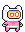
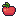
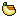
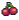
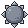
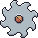
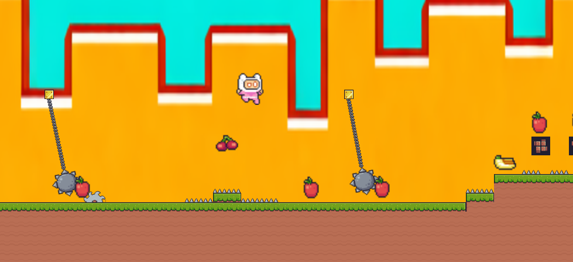

Hecho por Steven Soriano y Alvaro Fernandez
FruitQuest es un videojuego de plataformas 2D donde controlas a un gato espacial en busca de deliciosas frutas. Salta, esquiva obstáculos y completa todos los niveles.

Saltar
Mover izquierda y derecha
El objetivo es comer todas las frutas superando los obstáculos de cada nivel.

1 Punto

2 Puntos

3 Puntos
Ten cuidado, estos obstáculos son peligrosos:

Quita 10 de vida

Quita 10 de vida
¡Te matan directamente!
Explora múltiples niveles llenos de desafíos únicos y obstáculos.¿Podràs completar todos y convertirte en el mejor jugador?

Desde el minuto 1 nos propusimos crear un juego divertido y desafiante.
Investigamos mecánicas, diseño de niveles y referencias.
Vimos tutoriales de Godot, programación y físicas.
Hicimos bocetos de niveles e interfaz.
Programamos mecánicas, añadimos gráficos y probamos todo.
Corregimos errores y mejoramos la experiencia.